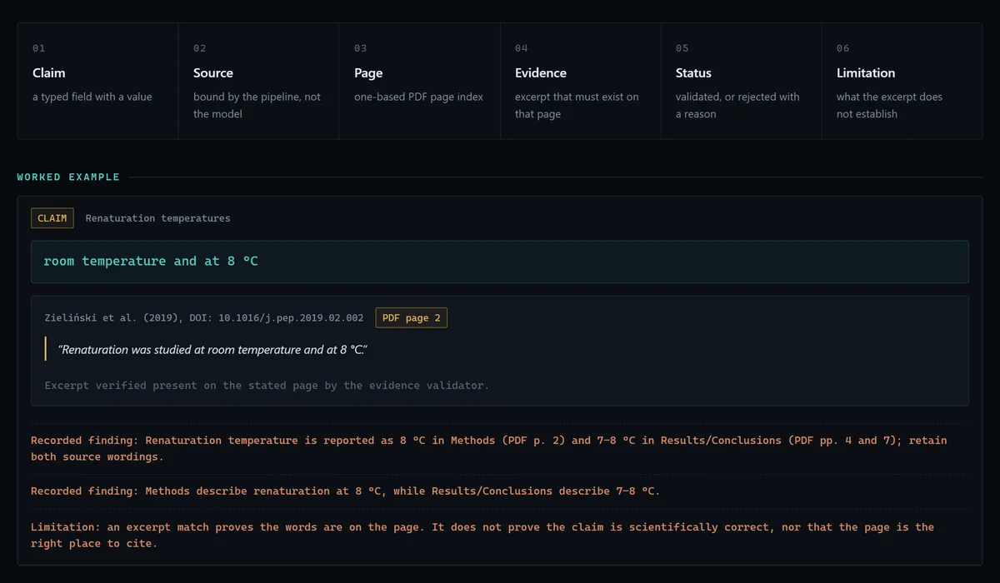

Flagship · In progress
ScaleUp AI
The problem
A lot of usable process knowledge already exists — but it lives inside papers, as prose and figures, rather than as anything a machine can execute.
ScaleUp AI turns scientific literature into structured, machine-readable process knowledge. Every extracted value is traced back to a source, a page and an excerpt.
The pipeline
- Paper — source read with page-preserving text
- Extraction — page-bounded chunks, reassembly verified
- ProcessState — a typed, deliberately partial record
- ProcessGraph — operations, states, typed relations
- Evidence — every value traced to an excerpt
- Uncertainty — what is ambiguous or unreported

Scope, stated plainly. This is a demonstrable prototype, not a product surface. The reference demo data is a verified fixture rather than a live model response, and the steps beyond the extraction path are research direction. No accuracy figures are claimed.